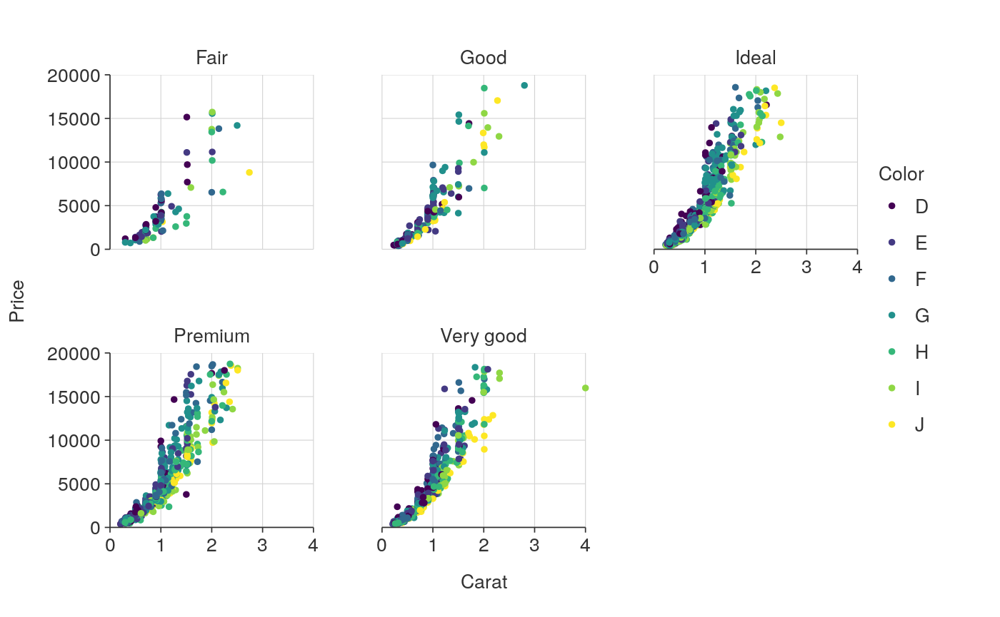

Overview
It can be challenging to build a shiny app with ggplot based graphs that works when viewed on mobile devices. simplevis offer methods to make ggplot based objects that work on either non-mobile or mobile devices.
Working with quoted inputs
In shiny it is often easier to work with quoted variables. For ggplot wrapper function, wrap the variables in !!sym, as shown below.
plot_data <- ggplot2::diamonds %>% sample_frac(0.05) %>% mutate(cut = stringr::str_to_sentence(cut)) gg_point_col_facet(plot_data, !!sym("carat"), !!sym("price"), !!sym("color"), !!sym("cut"))

Mobile friendly apps
A difficulty with shiny is making shiny apps that display graphs that work on mobile phones in portrait mode.
They often look unreadable (in portrait), as:
- titles neeed to start from the far left of the plot, and be left-aligned
- titles need to be wrapped
- x scale needs the minimum of labels to not look clutterred
- legends need to be on the bottom
- font sizes need to be appropriate
simplevis provides mobile support for plots through a mobile argument, which makes the above changes.
plot_data <- ggplot2::diamonds %>% mutate(cut = stringr::str_to_sentence(cut)) %>% group_by(cut) %>% summarise(average_price = mean(price)) gg_hbar(plot_data, average_price, cut, title = "Average diamond price by cut", x_title = "Average price ($US)", y_title = "Cut", mobile = TRUE)

The default font size scales to look about right when viewed on a mobile device.
Build one app that:
- identifies a
input$isMobilevalue of whether a user is on a mobile device or not through a mobileDetect function in theui.Rand some javascript in thewww/js/mobile.js - in the
server.R, generate areactiveplot object incorporating anmobile = input$isMobileargument intosimplevisggplot function - in the
server.R, render a plot object and a plotly object - in the ui.R, use conditional panels to provide the rendered plotly object to non-mobile users and the rendered plot object to mobile users
The reason why a plotly object is not provided to mobile users is that ggplotly does not implement all aspects of ggplot. This makes it hard to make it work nicely every time. A more reliable approach is to just provide a ggplot object instead to those users.
App templates
This method is demonstrated in two template apps that are provided called template1 and template2.
Users can access these functions by using the run_template functions for the applicable app, and then clicking on the download_code button to access a zip file of the code.
You can use these either to understand the method outlined above or to use as templates.
run_template("template1") # a graph and table run_template("template2") # a leaflet map, as well as graph and table
If you use these as templates, the basic method to create an app is:
- run
run_template("template1")orrun_template("template2")and download the code to use as a template - In
get_data.R, extract, process and save your data into thedatasubfolder, including a zip file for download - In
make_app_vis.R, draft your visualisations with dummy character inputs - In
global.R, read your data in, and create any vectors required - In
ui.R, add a app title - In
ui.R. addradioButtonsand other widgets - In
server.R, add code within reactive plot_data and plot components, change any dummy character inputs to shiny user inputs. Add amobile = input$isMobilespecification to any simplevis graphs if you are looking to support mobile users as well as desktop - In
server.R, add code for map and table components, as applicable - In
www/About.Rmd, update as necessary - If using google tag-manager, obtain a tag and replace
GTM-XXXXXXXwith it in thewww/js/tag-manager-jsfile.
Thanks!
Thanks to Gervasio Marchand for creating the code to identify whether users are on a mobile device as described here: https://g3rv4.com/2017/08/shiny-detect-mobile-browsers